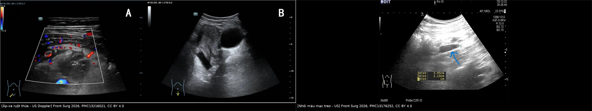
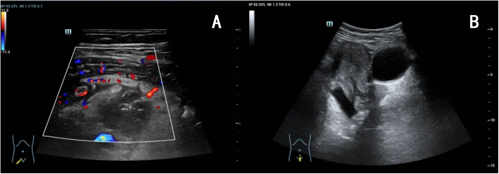
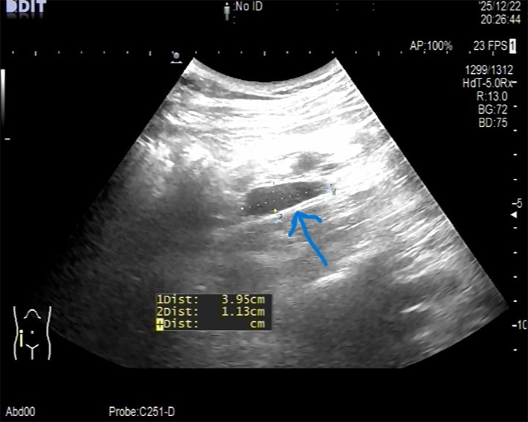
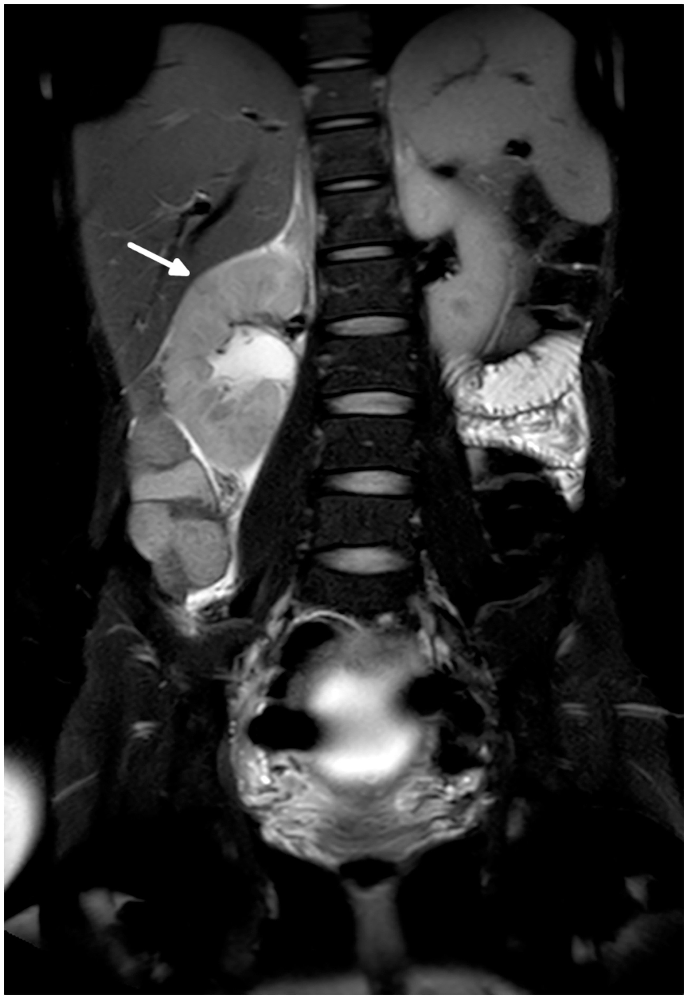

145 — Viêm ruột thừa trong thai kỳ: ruột thừa di lệch, siêu âm → MRI, mổ nội soi hay kháng sinh / Acute appendicitis in pregnancy
Tags: pattern:viem pattern:cap-cuu vung:bung vung:thai-ky protocol:US protocol:MRI protocol:CT score:Alvarado
Mức chắc chắn (certainty): tổng hợp y văn (literature synthesis) — guideline WSES Jerusalem 2020, tổng quan hệ thống 2026, đoàn hệ và meta-analysis 2026. Không có RCT lớn về điều trị kháng sinh trong thai kỳ; các khuyến cáo điều trị dựa trên bằng chứng quan sát.
1. Tổng quan bệnh học – cơ chế hình ảnh
- Tần suất: viêm ruột thừa cấp là cấp cứu ngoại khoa không sản khoa phổ biến nhất trong thai kỳ, khoảng 0,5–1/1.000 thai (0,063%); chiếm 65,6% các cấp cứu ngoại khoa không chấn thương ở thai phụ; gặp nhiều nhất ở tam cá nguyệt 2 (PMC10591244, PMC13216021).
- Vì sao khó chẩn đoán — 3 thay đổi sinh lý:
- Tử cung lớn đẩy ruột thừa lên cao và ra ngoài: tam cá nguyệt 1 ở hố chậu phải (RIF); tam cá nguyệt 2 ngang gờ chậu (pelvic brim); tam cá nguyệt 3 ở hạ sườn phải (RUQ). Tuy vậy 90% thai phụ vẫn đau hố chậu phải bất kể tam cá nguyệt — vị trí đau không đủ để loại trừ (PMC10591244).
- Bạch cầu tăng sinh lý: WBC nền tăng theo thai; trong một đoàn hệ, WBC trung bình 14,30 ± 4,77 (viêm thật) vs 12,37 ± 4,29 (không viêm), p = 0,040 — khác biệt nhỏ, không đủ chốt (PMC12743394).
- Buồn nôn/nôn, chán ăn, đau bụng là triệu chứng thai kỳ bình thường → dễ trấn an sai và chẩn đoán muộn.
- TẠI SAO hình ảnh là mấu chốt: ruột thừa viêm to ra do phù thành + ứ dịch lòng + tăng áp lực lòng; trên siêu âm là cấu trúc hình ống, không xẹp được (non-compressible), đường kính ngoài > 6 mm, thành > 2 mm; trên CT/MRI thêm thâm nhiễm mỡ quanh ruột thừa, dày thành > 3 mm, ngấm thuốc, dịch lòng ruột thừa không có khí (ngưỡng 2,6 mm có giá trị) (PMC12754330).
- Cạm bẫy số đo: tới 40% ruột thừa bình thường có đường kính > 6 mm khi lòng chứa khí/dịch → không chẩn đoán chỉ bằng đường kính; phải có dấu hiệu phụ (thâm nhiễm mỡ, dày thành, mất nhu động, dịch quanh) (PMC12754330).
- Hiệu năng hình ảnh (định lượng):
- Siêu âm: độ nhạy ~70%, độ đặc hiệu ~83% (PMC10591244); trong đoàn hệ so sánh, độ nhạy ở thai 46,5% vs 53,2% ở không thai (PMC13629179); một đoàn hệ khác: siêu âm đúng 66% ca viêm thật vs 28% ca không viêm (PMC12743394).
- MRI: gộp độ nhạy 94%, độ đặc hiệu 97% (meta-analysis dẫn trong PMC13189549); độ đặc hiệu 90,2–100%, NPV 95,2–96%; đưa MRI vào quy trình giảm mổ ruột thừa âm tính từ 26,3% xuống 2,6% (PMC13189549).
- MRI còn tìm được chẩn đoán khác: 167 thai phụ nghi viêm ruột thừa — 20,9% viêm ruột thừa thật, 18% chẩn đoán khác (56,7% phụ khoa, 26,7% niệu, 20% tiêu hóa) (PMC10852244).
- Hậu quả nếu chẩn đoán muộn: thủng ruột thừa → viêm phúc mạc, nhiễm trùng huyết, sinh non và thai lưu. Mổ ruột thừa trong thai có liên quan sinh non (PTB) tăng: aHR 1,73 (1,42–2,09); 11,9% vs 5,4% ở nhóm chứng; đặc biệt mổ ruột thừa âm tính có PTB 20,5% vs 9,2% khi ruột thừa viêm thật (PMC12842138). Đây là lý do chẩn đoán đúng quan trọng như mổ kịp thời.
2. Mẫu hình + chẩn đoán phân biệt theo tam cá nguyệt và vị trí đau (Gamut)
Gamut theo tam cá nguyệt:
- Tam cá nguyệt 1 — đau RIF: viêm ruột thừa, thai ngoài tử cung, xoắn phần phụ, xuất huyết hoàng thể, viêm phần phụ (PID), sỏi niệu quản, viêm túi mật (ít gặp).
- Tam cá nguyệt 2 — đau quanh gờ chậu: viêm ruột thừa (vị trí cao hơn), ứ nước/thận ứ do thai (hydronephrosis of pregnancy), sỏi niệu quản, xoắn phần phụ, thoát vị bẹn nghẹt, nhồi máu mạc treo (omental infarction).
- Tam cá nguyệt 3 — đau RUQ: viêm ruột thừa (ruột thừa cao), viêm túi mật/sỏi mật, hội chứng HELLP, nhồi máu gan, bóc tách/khối máu gan, tiền sản giật, nhau bong non, thoái hóa u xơ (red degeneration), vỡ tử cung.
- Sau sinh: ruột thừa về vị trí bình thường nhưng giãn cơ thành bụng + đau tử cung co hồi dễ che lấp; vẫn phải nghĩ viêm ruột thừa.
Gamut theo hình thái trên hình ảnh:
- Ống ruột thừa > 6 mm, không xẹp, thâm nhiễm mỡ quanh → viêm ruột thừa.
- Ống/hang có nhu động, không thâm nhiễm mỡ, xẹp khi ép → bình thường hoặc giãn thoáng qua.
- Khối hỗn hợp echo dày, không có cấu trúc ruột thừa rõ, có mỡ tăng echo → nhồi máu mạc treo (mimic).
- Thận ứ nước + dịch quanh thận, không thấy ruột thừa bất thường → nguyên nhân niệu khoa (mimic).
- Nang/khối phần phụ có mạch, đau khu trú → xoắn/phần phụ (mimic).
- Túi mật thành dày > 3 mm, sỏi, dấu Murphy → viêm túi mật (mimic).
3. Bảng so sánh phân biệt (ma trận đối chiếu)
| Thực thể (entity) | Hình ảnh điển hình | Chốt vào (rule-in) | Chốt loại (rule-out) | Gợi ý xác nhận |
|---|---|---|---|---|
| Viêm ruột thừa | Ống > 6 mm, không xẹp, thành dày, thâm nhiễm mỡ quanh; MRI: dịch lòng, ngấm thuốc | Ruột thừa > 6 mm + không xẹp + thâm nhiễm mỡ quanh trên US/MRI | Ruột thừa bình thường thấy rõ, xẹp được, không thâm nhiễm mỡ | US trước, MRI nếu không kết luận; mổ nội soi |
| Thai ngoài tử cung | Khối cạnh tử cung, túi thai ngoài lòng tử cung, dịch Douglas | β-hCG + không thấy túi trong tử cung + khối phần phụ | Túi thai trong tử cung có tim thai + không khối phần phụ | US đầu dò âm đạo + β-hCG; MRI nếu cần |
| Xoắn phần phụ | Buồng trứng to, nang, dấu xoắn (whirlpool), không có mạch | Đau đột ngột + buồng trứng to + mất tín hiệu Doppler | Mạch buồng trứng bình thường + không nang | US Doppler; MRI; mổ nội soi |
| Sỏi niệu quản / ứ thận | Ứ thận, dịch quanh thận, sỏi tăng tín hiệu trên T2/CT | Ứ thận cùng bên đau + sỏi | Không ứ thận, không sỏi | US + MRI (không cản quang); CT liều thấp nếu cần |
| Nhồi máu mạc treo | Khối mỡ tăng echo/đậm độ, không có ruột thừa viêm, dấu "whirl" mạch mạc treo | Khối mỡ viêm + ruột thừa bình thường | Ruột thừa viêm rõ | MRI/CT; mổ nội soi chẩn đoán |
| Viêm túi mật | Túi mật giãn, thành > 3 mm, sỏi, dịch quanh, dấu Murphy | Sỏi + thành dày + Murphy | Túi mật bình thường, không sỏi | US; MRI/MRCP |
| Thoái hóa u xơ (red degeneration) | Khối cơ tử cung đau khu trú, tín hiệu T1 cao/T2 thay đổi, không có ổ bụng | Khối u xơ + đau khu trú + sốt nhẹ | Không u xơ, không đau khu trú | MRI tiểu khung |

Trái: siêu âm Doppler — áp-xe ruột thừa 41 × 25 × 29 mm ở thai 3 tuần 4 ngày (PMC13216021). Phải: siêu âm — cấu trúc dạng ống 3,95 × 1,13 cm ở hố chậu phải, ban đầu đọc là viêm ruột thừa nhưng mổ ra là nhồi máu mạc treo (PMC13176252). Cả hai CC BY 4.0, ghép letterbox.4. Protocol chụp + quy trình quyết định
A. Siêu âm — bước 1, bắt buộc
- Đầu dò convex, ép có kiểm soát (graded compression), bắt đầu ở hố chậu phải, sau đó di chuyển lên trên và ra ngoài theo tử cung (tam cá nguyệt 2–3).
- Tư thế: ngửa, có thể nghiêng trái để tử cung dồn sang phải; bàng quang vừa đủ.
- Đo: đường kính ngoài (outer-to-outer), độ dày thành, chiều dài; đánh giá xẹp khi ép, nhu động, Doppler, thâm nhiễm mỡ, dịch ổ bụng, sỏi/ứ thận, buồng trứng.
- Không thấy ruột thừa ≠ loại trừ — ghi rõ "không quan sát được" và chuyển MRI.
B. MRI — bước 2 khi siêu âm không kết luận
- 1,5 T, không cần nhịn thở; chuỗi: SSFSE/HASTE axial–coronal–sagittal, T1 axial, T2 fat-sat (và DWI nếu có).
- Không dùng gadolinium thường quy; chỉ dùng khi thật cần và sau khi cân nhắc (ACR Manual on Contrast Media).
- Nhịn ăn 4 giờ; thuốc giảm nhu động nếu cần; tổng thời gian ~20–30 phút.
- Đọc theo thứ tự: ruột thừa (đường kính, thành, dịch lòng, thâm nhiễm mỡ) → dấu hiệu phụ → chẩn đoán khác (thận, phần phụ, túi mật, u xơ).
C. CT — chỉ khi MRI không có/không kết luận
- CT liều thấp, giới hạn trường chụp vào hố chậu phải; chỉ khi MRI không sẵn có, chống chỉ định hoặc không kết luận mà nghi ngờ cao (WSES 2020; ACR).
- Không dùng CT làm bước 1 vì liều xạ thai nhi và vì MRI có độ chính xác tương đương.
D. Điều trị
- Phẫu thuật là chuẩn mực khi chẩn đoán xác định: nội soi (laparoscopy) được ưu tiên khi có kinh nghiệm (WSES 2020, khuyến cáo 2B), với áp lực bơm 10–12 mmHg, nghiêng trái sau 20 tuần, trocar đặt cao hơn theo tử cung.
- Không điều trị kháng sinh đơn thuần thường quy trong thai kỳ (WSES 2020 khuyến cáo chống NOM, 2C) — vì thất bại tới 30% và nguy cơ thủng (PMC13216021).
- Ngoại lệ chọn lọc: áp-xe đã khu trú, thai phụ ổn định → dẫn lưu qua da + kháng sinh, hoặc ERAT (nội soi ngược dòng ruột thừa) ở trung tâm có kinh nghiệm; ca báo cáo 24 tuổi thai 3 tuần 4 ngày đã thành công sau PCD + ertapenem + ERAT (PMC13216021). [suy luận] Đây là bằng chứng ca, không thay thế mổ.
- Mổ nội soi vs mở — cân nhắc 2 chiều:
- WSES 2020: nội soi an toàn, ít biến chứng vết mổ, nằm viện ngắn hơn, ưu tiên khi có kinh nghiệm (2B); đoàn hệ Nhật 152 ca không có thai lưu ở cả hai nhóm (PMC12757167).
- Meta-analysis 2026 (22 nghiên cứu, 28.160 thai phụ): nội soi tăng thai lưu so với mở (OR 2,02; 1,40–2,92), đặc biệt tam cá nguyệt 2; nhưng giảm sinh non và biến chứng mẹ (PMC13446501).
- Kết luận thực hành: ưu tiên nội soi khi phẫu thuật viên có kinh nghiệm, thai phụ được hồi sức ổn; không "cố" nội soi nếu khó khăn — chuyển mở là quyết định đúng, không phải thất bại.
- Theo dõi sản khoa: monitoring thai theo tuổi thai (nghe tim thai, NST nếu ≥ khả năng sống), không dùng tocolysis thường quy; kháng sinh dự phòng theo phác đồ; hội chẩn sản khoa trước–trong–sau mổ.
E. Sơ đồ quyết định
flowchart TD
A[Đau bụng cấp ở thai phụ] --> B[Siêu âm graded compression: ruột thừa + phần phụ + thận + túi mật]
B --> C{Ruột thừa > 6 mm, không xẹp, thâm nhiễm mỡ?}
C -->|Có| D[Mổ nội soi appendectomy + hội chẩn sản]
C -->|Không thấy hoặc không kết luận| E[MRI 1.5T: SSFSE/HASTE + T1 + T2FS, không gadolinium]
E --> F{MRI xác định viêm ruột thừa?}
F -->|Có| D
F -->|Không, có chẩn đoán khác| G[Điều trị theo chẩn đoán: thận, phần phụ, túi mật, u xơ]
F -->|Không kết luận + nghi ngờ cao| H{MRI có sẵn?}
H -->|Không| I[CT liều thấp vùng hố chậu phải]
H -->|Có nhưng không kết luận| J[Nội soi chẩn đoán/điều trị]
I --> D
5. Biến thể bình thường và cạm bẫy
- Bẫy 1 — "6 mm là chắc chắn viêm": tới 40% ruột thừa bình thường > 6 mm; phải có dấu hiệu phụ (thâm nhiễm mỡ, dày thành, mất xẹp, dịch quanh).
- Bẫy 2 — "không thấy ruột thừa = không viêm": siêu âm ở thai có độ nhạy chỉ 46,5–70%; không thấy là chỉ định MRI, không phải kết luận âm.
- Bẫy 3 — giải thích đau bằng thai kỳ: buồn nôn, đau nhẹ, bạch cầu tăng đều là sinh lý → trấn an sai; chẩn đoán muộn làm tăng thủng, sinh non, thai lưu.
- Bẫy 4 — nhồi máu mạc treo (omental infarction): hình ảnh rất giống viêm ruột thừa trên siêu âm; ca báo cáo bị mổ vì "viêm ruột thừa" nhưng ruột thừa bình thường, tổn thương là mạc treo hoại tử (PMC13176252). Nếu ruột thừa bình thường mà vẫn có khối viêm → tìm tổn thương khác.
- Bẫy 5 — ứ thận sinh lý vs bệnh lý: ứ thận phải nhẹ do tử cung chèn là hiện tượng thường gặp trong thai kỳ; chỉ coi là nguyên nhân khi ứ vừa/nặng + sỏi + đau khu trú, và phải loại trừ viêm ruột thừa trước (PMC10852244).
- Bẫy 6 — mổ ruột thừa âm tính không phải "vô hại": PTB 20,5% sau mổ âm tính vs 9,2% khi viêm thật (PMC12842138) → xác định chẩn đoán trước mổ quan trọng hơn "mổ sớm cho chắc".
- Bẫy 7 — bỏ qua thủng/áp-xe: sốt cao, đau tăng, nhiễm trùng huyết, dịch ổ bụng → áp-xe/viêm phúc mạc, cần mổ/dẫn lưu cấp, không chờ.
- Bẫy 8 — không hội chẩn sản khoa: quyết định mổ và theo dõi thai phải đa chuyên khoa; tuổi thai quyết định cách monitoring và nơi mổ (phòng mổ có nhi sơ sinh).
6. Tự lượng giá — Blind Quiz
Ca 1 — Thai 8 tuần, sốt 38,2 °C, đau hố chậu phải 2 ngày. Nhìn siêu âm, mô tả trước khi xem đáp án.

- Câu hỏi: Cấu trúc bất thường là gì? Đo kích thước? Chẩn đoán và 3 việc cần làm tiếp?
Bấm để hiện đáp án
- Khối echo hỗn hợp, giới hạn không rõ, có tín hiệu Doppler quanh khối ở hố chậu phải; kích thước 41 × 25 × 29 mm — phù hợp áp-xe ruột thừa (không phải ruột thừa đơn thuần).
- Chẩn đoán: áp-xe ruột thừa trong thai sớm. Việc cần làm: MRI/CT liều thấp nếu cần xác định, kháng sinh + hội chẩn sản–ngoại, và dẫn lưu/mổ (ca này được PCD + ertapenem rồi ERAT).
- Cạm bẫy: khối áp-xe có thể không có hình ống điển hình — đừng loại trừ vì "không thấy ruột thừa".
- Nguồn: Zhou B et al., Front Surg 2026 (PMC13216021), CC BY 4.0.
Ca 2 — Thai 22 tuần, đau hố chậu phải, siêu âm thấy cấu trúc 3,95 × 1,13 cm. Chẩn đoán?

- Câu hỏi: Hình ảnh gợi ý gì? Vì sao không kết luận ngay viêm ruột thừa? Bước tiếp theo?
Bấm để hiện đáp án
- Cấu trúc dạng ống, echo dày, 3,95 × 1,13 cm, không có đặc điểm ruột thừa điển hình — ban đầu bị đọc là gợi ý viêm ruột thừa, nhưng trên mổ là nhồi máu mạc treo (omental infarction); ruột thừa bình thường.
- Vì sao không kết luận: kích thước > 6 mm không đặc hiệu; cần dấu hiệu phụ và MRI để phân biệt mỡ viêm/mạc treo với ruột thừa.
- Bước tiếp: MRI (hoặc nội soi chẩn đoán nếu nghi ngờ cao) + đánh giá ruột thừa có thật bất thường không.
- Nguồn: Zhuang X, Front Surg 2026 (PMC13176252), CC BY 4.0.
Ca 3 — Thai 17 tuần, đau hông lưng phải lan xuống, sốt nhẹ. MRI có hình sau. Chẩn đoán và mối liên quan với viêm ruột thừa?

- Câu hỏi: Dấu hiệu chính? Đây có phải viêm ruột thừa không? Vì sao MRI quan trọng ở thai phụ?
Bấm để hiện đáp án
- Ứ thận phải mức độ nhẹ–vừa (mũi tên), kèm dịch quanh thận và thâm nhiễm mỡ — phù hợp viêm thận–bể thận/ứ thận có biến chứng, không phải viêm ruột thừa.
- MRI giúp loại trừ viêm ruột thừa và tìm chẩn đoán khác: trong 167 thai phụ, 18% có chẩn đoán khác trên MRI (phụ khoa 56,7%, niệu 26,7%, tiêu hóa 20%).
- Vì sao quan trọng: không xạ, độ nhạy 94%/đặc hiệu 97%, giảm mổ âm tính; không dùng gadolinium thường quy.
- Nguồn: Bufman H et al., PLoS One 2024 (PMC10852244), CC BY 4.0.
Bài liên quan chéo
- 161 – Viêm ruột thừa cấp
- 550 – Thai sớm: sảy thai, thai ngoài tử cung
- 583 – Nang lạc nội mạc trong thai kỳ
- 160 – Bụng cấp hố chậu & tắc ruột
Ảnh
145_apxe-ruot-thua-thai-som_US_PMC13216021.jpg,145_viem-mo-mac-treo_US_PMC13176252.jpg,145_MRI-chan-doan-khac_PMC10852244.jpg— CC BY 4.0.composite_dau-hcp-thai-ky.jpg— ảnh ghép letterbox từ ảnh 1 và 3 (CC BY 4.0).- Nguồn, giấy phép, tác giả: xem
images/CREDITS.mdvàsources.md.
Không dùng để chẩn đoán độc lập khi chưa có người hướng dẫn.